Tres son las grandes teorías que unifican la biología como ciencia y que por lo tanto son aplicables a todos los seres vivos: la teoría celular, la teoría genética y la teoría evolutiva. Esta última formulada con éxito por el naturalista británico Charles Darwin. El 2009 celebramos un doble aniversario. 200 años del nacimiento de Charles Darwin y 150 años de la publicación de “El origen de las especies”, la obra más famosa de este gran naturalista inglés.
Este texto busca poder informarte sobre Darwin, su obra e importancia para la biología moderna. Para esto el siguiente texto está organizado en las siguientes preguntas:
¿Quién fue Charles Darwin?

Charles Darwin (1809-1882) fue un naturalista inglés del siglo XIX. Es famoso por haber planteado que todas las especies tienen antepasados comunes con otras especies y por haber proporcionado suficiente evidencia de ello. Darwin afirmó que las especies no han sido las mismas durante la historia de la Tierra, sino que han cambiado, adaptándose a los cambios sufridos en el entorno. Esto en si constituye el hecho evolutivo. Sin embargo, Darwin no se limitó a mostrar evidencias de la evolución sino que presentó una teoría que explicase lo que generaba este cambio. El mecanismo que propuso Darwin lo denominó “selección natural”, y a él llegó también otro inglés llamado Alfred Russell Wallace.
El principal merito de Darwin fue proporcionar una explicación natural para las adaptaciones de las especies, como alternativa al diseño divino. Como resultado de esto, el origen y la configuración de las especies desde su época se pueden explicar por la razón humana sin recurrir a agentes sobrenaturales. Darwin extendió la revolución copernicana a la Biología.
El camino que llevaría a Darwin a generar la teoría evolutiva se inició con un viaje alrededor del mundo que duró casi cinco años (27 de diciembre 1831- 2 de octubre de 1836). En este el observó la diversidad biológica y la distribución de las especies alrededor del mundo. También recolectó fósiles e hizo observaciones de tipo geológico. Luego en casa, siguió trabajando en el tema hasta publicar su famosa obra El origen de las Especies, en 1859.
Darwin también hizo aportes en otros aspectos de la biología. Estudió la forma como se fertilizan las orquídeas, las adaptaciones y formas de crecimiento de las plantas trepadoras, el papel de las lombrices en la formación del suelo fértil, la expresión de las emociones en los animales y el hombre, y la variación de las plantas y animales bajo domesticación. Darwin también incursionó en la ciencia de la geología al estudiar la formación de los arrecifes de coral y hacer análisis de la geología de algunas regiones de Suramérica.
¿Fue Darwin quién propuso por primera vez que las especies evolucionan con el tiempo?
No. Las ideas evolutivas existen desde la época de los antiguos griegos, como es el caso de Anaximandro de Mileto (610 a.C. -546 a.C.). Ya en la era común (o después de Cristo), el conde de Buffon, el francés George Louis Leclerc (1707-1788), famoso por haber descrito muchas especies vegetales y animales, admitía cierto cambio o transformismo dentro de las especies. Quien abonó el camino a las ideas evolutivas modernas fue el naturalista francés Jean Baptiste Lamarck (1744-1829). Este conde francés propuso que las especies evolucionaban por el uso o desuso de sus órganos, lo cual recibió el nombre de “herencia de los caracteres adquiridos”. Hoy sabemos que la explicación dada por Lamarck era incorrecta. Lo sabemos gracias a los conocimientos modernos sobre la genética y el mecanismo de la selección natural.
En 1825 el geólogo francés George Cuvier, publicó un trabajo en el que describía muchas especies animales conocidas solo por los fósiles. Cuvier afirmó con razón que si las rocas antiguas y los fósiles que contiene se ordenan de las más antiguas a las más recientes, se muestra que las faunas han cambiado notablemente en el transcurso del tiempo geológico. Cuvier fue el primero en darse cuenta que tipo de animales eran los dinosaurios, y también fue el primero en catalogar a los pterodáctilos -conocidos por los fósiles- como un grupo de reptiles voladores, hoy inexistentes. Cuvier también afirmó que especies como los perezosos gigantes, mamuts, dinosaurios y pterosaurios se habían extinguido. Esta idea era incómoda para muchas personas religiosas que consideraban que Dios no permitiría que una de sus creaciones llegara a extinguirse. Hoy a Cuvier se le considera el padre de la paleontología.
Como podemos ver, en tiempos de Darwin, la idea de un mundo con faunas cambiantes no era nueva. Sin embargo, no había una teoría sólida que explicase como las especies habían cambiado. La genialidad de Darwin consistió en compilar muchas evidencias directas e indirectas sobre el hecho de la evolución y en hallar un mecanismo que la permitiese: la selección natural. Dentro de las evidencias directas tenemos el registro fósil, y como indirectas está el estudio comparado de la anatomía, fisiología y embriología de diferentes especies, la distribución geográfica de las especies fósiles y actuales, y más recientemente el estudio de las secuencias de ADN y proteínas, entre otras.
¿Qué fue exactamente lo que propuso Darwin sobre la evolución?
Cuatro son las principales ideas que Darwin propuso en “El origen de las Especies”. Primero, que la vida en la Tierra es muy antigua; segundo, que las especies no han sido las mismas durante la historia de la vida en la Tierra, sino que han cambiado; tercero, que la selección natural es un mecanismo propio de la naturaleza que se encarga de adaptar las especies a sus ambientes generando la evolución de las especies, y cuarto, que todas las formas de vida comparten un antepasado común en el inicio de la vida en el planeta. Es importante aclarar en este punto que Darwin no trató sobre el tema de la aparición de la vida, o abiogénesis, como creen muchas personas.
La siguiente gráfica resume las principales explicaciones que cambiaron antes y después de Charles Darwin

Los resultados del trabajo de Darwin pueden agruparse en dos teorías: la Teoría de la selección natural y la teoría de la ascendencia común o de la descendencia con modificación.
La Teoría de la descendencia con modificación dice:
Todos los seres vivos han evolucionado desde uno o unos pocos tipos simples de organismos.
Las especies actuales evolucionan desde especies pre-existentes.
La aparición de las especies es gradual y tarda mucho tiempo en producirse.
Las jerarquías taxonómicas de rango superior (géneros, familias, órdenes, subclases, clases,..) reflejan la evolución de la vida y son evidencia de la evolución de las especies a partir de ancestros comunes.
Cuanto mayores sean las similitudes entre taxones, mayor será la relación que existe entre ellos y menor su divergencia en el tiempo.
La extinción de las especies es resultado de la competencia entre las especies o a cambios en el medio a los cuales no pudieron adaptarse. Por ejemplo: cambios climáticos.
El registro geológico es incompleto. La ausencia de formas de transición se debe a estas lagunas en el mismo.
La Teoría de la selección natural dice:
El número de individuos en las poblaciones tiende a incrementarse de forma geométrica.
Dicho número, no obstante, suele permanecer estable porque el ambiente tiene recursos limitados y, por tanto, solo una fracción de la descendencia sobrevivirá y se reproducirá con éxito.
Aquellos que sobreviven y se reproducen difieren de aquellos que mueren, porque los individuos en una población no son idénticos debido a la variación heredada.
La probabilidad de sobrevivir y reproducirse determina qué variaciones serán las que perpetuarán la especie.
La selección natural resulta de la acumulación de caracteres heredables ventajosos, eliminando aquellos que son desfavorables.
¿Qué científicos influyeron en Darwin para que estructurara la teoría de la evolución?
Aparte de los ya mencionados, Leclerc, Lamarck y Cuvier, el geólogo y amigo personal de Darwin, Charles Lyell (1797-1895), influyó en gran manera en las ideas del naturalista británico. Lyell fue uno de los fundadores de la geología moderna. Lyell propuso en su obra “Principios de geología” que los fenómenos que hoy en día modelan el mundo, como la erosión, el vulcanismo, los terremotos y las inundaciones también lo habían hecho en el pasado. Antes de llegar a formular la teoría de la evolución, Darwin leyó su obra mientras hacía su famoso viaje alrededor del mundo. El uniformitarismo propuesto por Lyell traía como implicación que la edad del planeta era inmensa, pues el tiempo requerido para que la erosión de la lluvia y el viento erosione una montaña es vastísimo. Lyell le proporcionó a Darwin el tiempo - un factor necesario para que pudiera darse la evolución. Las dataciones radiométricas del siglo XX le darían la razón a Lyell y a Darwin sobre la antigüedad de la Tierra, y la edad de los fósiles hallados en los estratos rocosos.
Un economista que influyó a Darwin fue Thomas Robert Malthus, quien publicó un ensayo sobre el crecimiento de la población la población humana crece en progresión geométrica, mientras que los recursos de subsistencia lo hacen en progresión aritmética. Así, llegará un punto en el que la población no encontrará recursos suficientes para su subsistencia. Al leerlo el naturalista británico se dio cuenta que este principio no solo se aplica a las poblaciones humanas sino también las poblaciones de todos los organismos. Esto fue la primera observación que lo llevaría a formular la teoría de la selección natural.
¿Fue Darwin quien dijo que todo se originó por el Big-Bang?
No. Usualmente la gente confunde la evolución del universo con la evolución biológica. Darwin se ocupó solamente de la evolución biológica. La teoría del Big Bang fue elaborada hasta el siglo XX como consecuencia de la solución de las ecuaciones de campo de Albert Einstein sobre la relatividad general. Los científicos que hicieron aportes en este campo fueron Alexander Friedman, Georges Lemaître, Howard Percy Robertson y Arthur Geoffrey Walker. Pero esto ya es otro tema.
¿Dijo Darwin que descendemos del mono?
Primero aclaremos que se quiere decir por “mono”. El término mono no significa para todos lo mismo, pues mientras para algunos es aplicable a todos los primates, para otros solo se refiere a unos pocos, como los monos americanos (mono ardilla, mono araña, etc.), monos del viejo mundo (macacos, papiones, geladas, langures) y simios (gibones, orangutanes, gorilas, bonobos y chimpancés). Este segundo significado se explica ya que hay primates que en términos corrientes no serían llamados monos, como los lémures, gálagos, tarseros y el extraño aye-aye de Madagascar. Los biólogos usan más el segundo significado cuando lo utilizan para comunicarse con la gente.
Volviendo al punto de si descendemos del mono, Darwin nunca afirmó que los humanos desciendan de una especie de mono actual como el chimpancé o el macaco Rhesus, lo que si afirmó es que tanto los humanos como los monos actuales comparten un antepasado común en el pasado remoto del cual todas las especies de monos de hoy y el hombre descienden. Sin embargo, si este lejano antepasado fuese visto por cualquier persona esta no dudaría en calificarlo como un “mono”. Por lo tanto, el antepasado común de los humanos, orangutanes, monos araña, capuchinos y demás monos luciría como un mono. Esto hace que la famosa expresión “descendemos del mono” sea cierta, pero debemos aclarar que se trata de una especie de mono ya extinta, a pesar que a muchas personas este hecho les hiera su susceptibilidad.
Cabe recordar que cualquier especie comparte un antepasado común con cualquier otra, solo que ese ancestro común puede estar relativamente cercano o muy lejano en el tiempo según con quien se compare. Por ejemplo, el hombre con el gorila comparte un antepasado común, de igual manera que comparte un ancestro común con el ratón. Pero, el último antepasado común del humano y el gorila vivió hace 14 millones de años aproximadamente, mientras que el último ancestro común entre los humanos y los ratones vivió hace 60 millones de años aproximadamente.
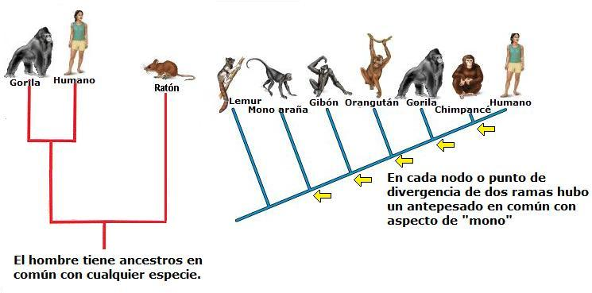Darwin afirmó fue que el hombre está más relacionado con los monos de África y Asia que con los de América y que desciende del linaje de los primeros. En su libro El Origen del Hombre, leemos:
Al formar sobre este punto juicio relativo al hombre, debemos estudiar con algún detenimiento la clasificación de los simios. Esta ha sido dividida por casi todos los naturalistas en el grupo catarrino, o monos del antiguo continente, caracterizados como de su nombre se deduce, por la peculiar estructura de las ventanas de su nariz y tener cuatro premolares en cada maxilar… Ahora, bien, el hombre, sin género alguno de duda, por su dentadura, estructura de los orificios nasales y varios otros respectos, pertenece a la división de los catarrinos o del antiguo continente… Resulta, pues, por consecuencia, que el hombre es una rama del árbol simio del antiguo continente, y que desde el punto de vista genealógico se le debe colocar en el grupo catarrino.
El Origen del Hombre. Página 190. Capítulo 6.
Estos [los monos] se separan entonces en dos grandes ramas, los monos del nuevo mundo y los del antiguo mundo; y de estos últimos, finalmente, es de donde en remontísima época provino el hombre, maravilla y gloria del universo.
El Origen del Hombre. Página 205. Capítulo 6.

Es importante aclarar que la biología actual acepta esto no porque lo dijo Darwin, sino por la abundante evidencia anatómica y genética. Como evidencia genética se puede mencionar la similitud que hay de las secuencias de ADN mitocondrial las cuales pasan de una generación a otra por el linaje materno.
Los resultados de este análisis muestran que los chimpancés son la especie viva más cercana al hombre, y los neandertales -especie humana ya desaparecida - es la especie extinta más cercana a nosotros.

Es notable que Darwin al estudiar las características anatómicas de los grandes simios africanos, los chimpancés y los gorilas, haya predicho que en África se encontrarían los fósiles de antepasados de la especie humana. Él no vivió para verlo, pero en 1925 Raymond Dart hallaría los primeros restos de un australopiteco, un género de primates extintos que aunque tenían un cerebro del tamaño similar al de los chimpancés caminaba de forma bípeda como nosotros. Después del Australopithecus africanus encontrado por Dart vino el descubrimiento de muchas otras especies que han ayudado a esclarecer los orígenes humanos, y sin duda a confirmar que somos una especie de primate que ha sufrido un proceso evolutivo al igual que las demás especies que hay sobre la Tierra.
Otro aspecto relacionado con esta pregunta es la objeción hecha por muchas personas que preguntan porque si el hombre desciende del mono, porque aún hay monos y no todos han evolucionado en humanos. Esto demuestra que la mayor parte de la gente desconoce como realmente opera la evolución biológica. Primero, no existe una tendencia que obligue a todas las especies a transformarse en otra, pues usualmente las nuevas especies se forman de poblaciones aisladas en las que la selección natural o la deriva genética pueden formar una nueva especie. Segundo, cabe recordar que como resultado de la evolución las especies están adaptadas en el medio en el que actualmente las encontramos. Así vemos que en África occidental los monos cercopitecos están adaptados a alimentarse principalmente de los frutos de los árboles, mientras qué el colobo rojo está adaptado para alimentarse principalmente de hojas de los árboles. Nada los obliga a evolucionar en humanos, simplemente la selección natural permite que los individuos con las mejores características al medio (los árboles de la selva húmeda y sus recursos, en este caso) sobrevivan y dejen más hijos. Hijos que por supuesto tendrán genes eficaces para ese medio.
El registro fósil nos muestra que en medio de un cambio climático ocurrido hace unos 5 millones de años la parte oriental de África pasó de selvas arboladas a zonas abiertas con árboles aislados y en ese medio aparecieron unos simios bípedos que hoy conocemos como Ardipithecus y Australopithecus, antepasados de los humanos. De no haberse dado ese cambio climático y toda África fuera de costa a costa una gran selva húmeda quizás la especie humana no estaría aquí.
¿Qué es la selección natural?
La selección natural es un proceso de la naturaleza que es el responsable de la adaptación de las especies a su medio. La selección natural es resultado de la reproducción diferencial -unos organismos dejan más descendencia que otros- debido a que tienen ciertas características que le permitieron sobrevivir en la naturaleza. Estas características genéticas favorables pasan a su progenie. En términos más simples, la selección natural consistente en la supervivencia y la reproducción entre genotipos diferentes, o hasta en genes diferentes, en lo que podríamos llamar el éxito reproductivo. Un genotipo es un grupo de organismos que comparten un conjunto genético específico.
La selección natural actúa sobre la diversidad genética existente. Y esta diversidad es causada por la mutación (un mecanismo que Darwin desconocía, y que fue comprendido hasta después de establecida la genética como ciencia).
Las adaptaciones de los seres a su medio se deben a la selección natural. El siguiente ejemplo, hecho sobre el camuflaje de una especie de escarabajo, ilustra el proceso.
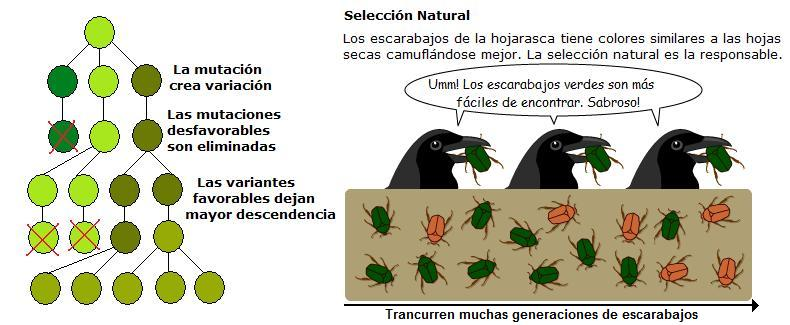En palabras de Darwin: “Metafóricamente puede decirse que la selección natural escudriña, cada día y cada hora, por todo el mundo, las más ligeras variaciones: rechaza las que son malas, conserva y acumula las que son buenas…”
El Origen de las Especies. Pág. 118. Capítulo 4.
Con frecuencia ocurre que las personas no entienden la selección natural, y piensan que la evolución ocurre como consecuencia de la intención o necesidad de un individuo para adaptarse al medio. Las ideas del público en general se aproximan más a la idea de Lamarck que a la de Darwin. El siguiente ejemplo clarifica ambas posiciones.

Uno de los ejemplos más espectaculares que muestra la naturaleza como resultado de la selección natural es la coevolución entre las plantas y sus polinizadores. Para mayor información sobre esto lo invitamos a leer un ensayo publicado en Sindioses.org al respecto.
Muchas personas no entienden realmente la evolución, creyendo que la evolución ocurre por el azar, desconociendo el papel de la selección natural. Muchos desconocen que la selección natural es un proceso que aprovecha las características favorables para los organismos en su contexto ecológico.
“La selección natural actuá solamente mediante la conservación y acumulación de pequeñas modificaciones heredadas, todas ellas heredadas para el ser conservado.”
El Origen de las Especies. Pág. 128. Capítulo 4.
Darwin también notó que entre los animales existe otro tipo de competencia. La que se da por la pareja. En esta competencia los machos luchan por tener acceso a las hembras o por mantener un harén. Esto conlleva a que algunas especies muestren dimorfismo sexual - que machos y hembras tengan aspecto diferente- como los leones o los elefantes marinos. En el caso de los pavos reales, Darwin notó que las hembras prefieren a los machos con colas más vistosas a pesar que esta ornamentación también lo hace más visible ante los tigres.
En palabras de Darwin:
[La selección sexual] no depende de una lucha por la existencia sino de una lucha entre los machos por la posesión de las hembras; el resultado no es la muerte del competidor que no ha tenido éxito, sino el tener poca o ninguna descendencia. La selección sexual es, por lo tanto, menos rigurosa que la selección natural. Generalmente, los machos más vigorosos, aquellos que están mejor adaptados a los lugares que ocupan en la naturaleza, dejarán mayor progenie. Pero en muchos casos la victoria no dependerá del vigor sino de las armas especiales exclusivas del sexo masculino…
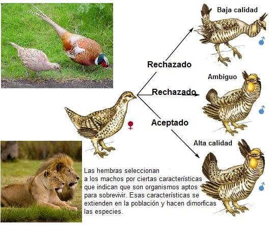El origen del hombre y la selección en relación al sexo. Capítulo 8
¿Cómo llegó Darwin a desarrollar la teoría de la selección natural?
Darwin llegó a la teoría de la selección natural en 1838 leyendo el “Ensayo sobre el principio de población” de Thomas Malthus, economista inglés. Para esta época Darwin ya había regresado de su viaje en el Beagle. En este ensayo Malthus explicaba que las poblaciones humanas no podían crecer indefinidamente, aunque tuvieran el potencial de hacerlo porque los recursos son limitados. Darwin comprendió que todas las poblaciones -no sólo la humana- están condenadas potencialmente a exceder los recursos de los que depende su existencia. Sólo una pequeña fracción de los individuos que podrían existir, nace, sobrevive y llega a reproducirse. Según el naturalista, los organismos que sobreviven son los que se encuentran “favorecidos”, para usar su propio término, por ser portadores de ligeras variaciones ventajosas.
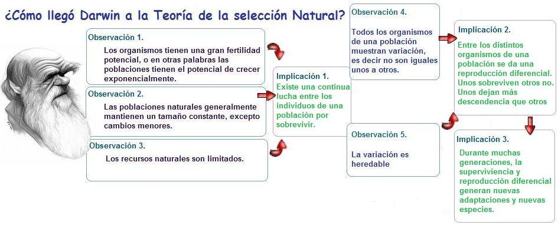Darwin también vio en la domesticación una analogía de la selección natural. Los criadores de animales y plantas domésticos realizan una selección, pues ellos seleccionan los organismos que desean que se reproduzcan según unas características favorables para el criador.
Darwin mismo se dedico a la crianza de palomas y estudio como se originaban diferentes razas por medio de una selección artificial. El naturalista razonó que la naturaleza hace lo mismo con las variables naturales que se adaptan mejor a su ambiente.
“Aunque existan salvajes tan bárbaros que no piensan nunca en el carácter hereditario de la descendencia de sus animales domésticos, sin embargo, cualquier animal que les es particularmente útil para algún objeto especial sería cuidadosamente preservado de las hambres y otras calamidades a las que están expuestos los animales salvajes, y estos escogidos darían generalmente más descendencia que los de clase inferior, de modo que en este caso se iría produciendo una especie de selección inconsciente.”
El Origen de las Especies. Pág. 80. Capítulo 1.
“Si el hombre puede producir, y seguramente ha producido, grandes resultados con sus medios metódicos e inconscientes de selección ¿qué no podrá efectuar la selección natural?”
El Origen de las Especies. Pág. 118. Capítulo 4.

De hecho El origen inicia con una exploración de la variación animal y vegetal entre las variedades domésticas.
¿Qué es la teoría de la ascendencia común?

Una de las ideas más hermosas de Darwin, fue la de considerar todas las formas de vida emparentadas unas con otras. Tras una detallada observación biogeográfica, del registro fósil, la anatomía y embriología comparada Darwin logró dilucidar que todos los seres vivos han evolucionado desde uno o unos pocos tipos simples de organismos, o en otras palabras, que las especies que hoy existen evolucionaron a partir de otras especies del pasado.
Darwin también afirmó que muchas de las especies que habitaron la Tierra ya no se encuentran con nosotros, sino que se han extinguido. Tal extinción es resultado de la competencia entre las especies o a cambios en el medio a los cuales no pudieron adaptarse. Darwin adjudico la falta de formas de transición entre los principales grupos de seres vivos a la imperfección del registro fósil. Sin embargo, estas “lagunas” de formas de transición se han llenado con el trabajo de los paleontólogos desde sus tiempos hasta nuestros días.
¿Cómo llegó Darwin a concebir la teoría de la ascendencia común?
Difícilmente Darwin podría haber llegado a la teoría de la ascendencia común sin haber realizado el famoso viaje en el Beagle que duró de 1831 a 1835. Este viaje lo llevó a las selvas tropicales del Brasil, a la Patagonia, los Andes chilenos, las islas volcánicas de los Galápagos, Tahití, Nueva Zelanda, Australia y varias islas africanas. Muchas personas creen que las observaciones de Darwin hechas en las islas de las Galápagos en 1836 le hicieron cambiar súbitamente de la tradicional posición creacionista a una evolucionista, pero en realidad se trató de un proceso gradual, en el que las observaciones hechas se constituyeron en piezas de un rompecabezas que gradualmente su cerebro se encargó de armonizar.

Las piezas del rompecabezas darwiniano son cinco. Estas son: el registro fósil, la taxonomía, la anatomía comparada, la embriología y la biogeografía o distribución geográfica de las especies.
Uno de los hechos que dio a Darwin pistas sobre el proceso evolutivo fue el hallazgo de mamíferos fósiles en Argentina y Uruguay durante su viaje en el Beagle.
Allí encontró fósiles de grandes mamíferos, tales como Macrauchenia, un animal sin par en la actualidad. Parecido a un camello, pero sin joroba, con una trompa similar a la del tapir y una altura de dos metros. Esta especie y todas las de su orden (Orden Liptoterna), se extinguieron sin dejar especies hijas. Pero Darwin también halló especies extintas relacionadas con especies actuales, como los perezosos gigantes, de los cuales halló fósiles de varias especies y géneros diferentes (Scelidotherium leptocephalum, Glossotherium robustum, Mylodon darwini), al igual que los gliptodontes (Doedicurus clavicaudatus), una especie de armadillo de 3,6 metros de largo y 1,5 de alto. Poseía un gran caparazón y un mazo al final de la cola como arma defensiva.

El genial naturalista nota que estos animales, ya desaparecidos, guardaban un parecido con animales vivos lo que lo llevó a preguntarse si sería posible que a lo largo de generaciones los animales se pudieran transformar, es decir, evolucionar.
En palabras de Darwin:
“Se hace imposible reflexionar acerca de los cambios que se han originado en el continente americano, sin experimentar el más profundo asombro. Ese continente, en la antigüedad debió rebosar de monstruos enormes; hoy en día ya no encontramos más que pigmeos, si comparamos los animales que en él viven con sus razas similares extintas”.

Continuando su viaje Darwin notó que muchas especies son reemplazadas por otras en otras regiones geográficas. Usualmente esas otras especies son muy parecidas, por lo que teorizó que ambas especies podrían estar emparentadas y tener un origen común. Esto lo evidenció con unas aves no voladoras de Sudamérica conocidas como ñandués. Darwin notó que al sur del continente la especie de ñandú común (Rhea americana) que habita las pampas argentinas, es reemplazada por el ñandú petiso (Pterocnemia pennata) adaptada a climas prevalentemente fríos de la estepa patagónica y la meseta andina.

Las observaciones hechas durante el viaje del Beagle de flora y fauna, del comportamiento y costumbres de las diferentes especies que fue descubriendo, y los fósiles que descubrió, le dieron a Darwin la pauta de una progresiva adaptación al hábitat, teoría que completaría muchos años después. Hacia 1839, Darwin comenzó a pensar que la naturaleza contenía el potencial para que ciertas variaciones aparecieran. Esta variación sólo surgía cuando la reproducción era sexual, esto es, no era válida en caso de trasplantes. Estas pequeñas variaciones, progresivamente, llevarían a que la descendencia manifestara cambios permanentes.
Darwin notó que el parecido que tienen las especies dentro de un género refleja un antepasado común. De igual manara el parecido que tienen los diferentes géneros dentro de una familia reflejan un ancestro común para toda la familia. Y así de esta manera cada jerarquía taxonómica tiene unas características propias que fueron legadas de un ancestro común. Es así como Darwin notó que la clasificación taxonómica, adelantada por el naturalista Carlos Linneo en el siglo XVIII, en realidad refleja la evolución en grandes cantidades de tiempo, o la macroevolución; y que mientras mayores sean las similitudes entre taxones (géneros, familias, ordenes, clases, etc.), mayor será la relación que existe entre ellos y menor su divergencia en el tiempo.
- “Desde el período más remoto de la historia del mundo se ha visto que los seres orgánicos se parecen entre sí en grados descendentes, de modo que pueden clasificarse en grupos subordinados a grupos…”
-
El Origen de las Especies. Pág. 414. Capítulo 14.
- “Creo que es así, y que la comunidad de ascendencia -única causa conocida de estrecha semejanza en los seres orgánicos- es el vínculo que aunque atisbado en diferentes grados de modificación, nos es revelado en parte por nuestras clasificaciones.”
-
El Origen de las Especies. Pág. 416. Capítulo 14.
Otro aspecto que llevo a Darwin a enunciar la ascendencia común fue la anatomía comparada. Darwin logró entender las estructuras anatómicas comunes entre los organismos de un determinado taxón como estructuras heredadas de un mismo ancestro. Al respecto dijo:
“Esta es una de las partes más interesantes de la historia natural, y casi puede decirse que es su misma alma. ¿Qué puede haber más curioso que el que la mano del hombre, hecha para coger; la del topo hecha para minar; la pata del caballo, la aleta de la marsopa y el ala del murciélago estén todas construidas según el mismo patrón y comprendan huesos similares, en las mismas posiciones relativas?”
“Según la teoría ordinaria de la creación independiente de cada especie, solamente podemos decir que esto es así; que le ha placido al creador construir todos los animales y plantas, en cada una de las grandes clases, según un plan uniforme, pero esto no es una explicación científica.”
“La explicación es sencillísima según la teoría de la selección de ligeras modificaciones sucesivas, por ser cada modificación provechosa de algún modo a la forma modificada, aunque afecten a menudo, por correlación, a otras partes del organismo. En cambios de esta naturaleza, habrá poca o ninguna tendencia a alterar el modelo original o a trastocar las partes. Los huesos de un miembro pudieron acortarse y aplanarse en cualquier medida, y llegar a quedarse envueltos al mismo tiempo por una membrana gruesa, de modo que sirvan como aleta o en una pata anterior palmeada pudieron alargarse hasta cualquier dimensión todos sus huesos, o determinados huesos, creciendo al mismo tiempo la membrana que los une, de modo que sirvan como ala, y sin embargo todas estas modificaciones no tenderían a alterar el armazón de los huesos o la conexión relativa de las partes.”
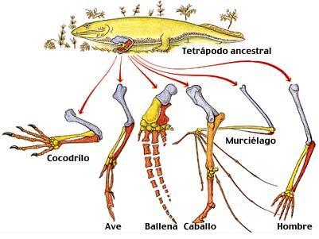El Origen de las Especies. Pág. 432 y 433. Capítulo 14.

En el penúltimo capítulo del Origen Darwin muestra que en la naturaleza hay organismos que tienen órganos rudimentarios que tienen una función disminuida o ninguna, y que estas estructuras solo se pueden explicar como resultado de la evolución. Pues, al cambiar la especie estás estructuras quedaron con su función disminuida. Hoy en día a estas estructuras se les conoce como estructuras vestigiales.
“Según la Teoría de la descendencia con modificación, el origen de los órganos rudimentarios es relativamente sencillo y podemos comprender, en parte, las leyes que rigen el imperfecto desarrollo… Al principio llevaría gradualmente a la reducción a la reducción cada vez más completa de una parte, hasta que al fin llega esta a ser rudimentaria, como en el caso de los ojos de los animales que viven en las cavernas oscuras, y el de las alas de las aves que viven en islas oceánicas, aves que rara vez se han visto en la obligación de emprender el vuelo acosadas por los animales depredadores y que, finalmente, han perdido la facultad de volar. Además que un órgano útil en ciertas condiciones puede volverse perjudicial en otras, como las alas de los coleópteros que viven en islas pequeñas y expuestas a los vientos, y en este caso la selección natural habrá ayudado a la reducción del órgano, hasta que se volvió inofensivo y rudimentario.”
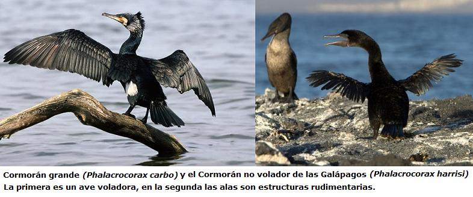El Origen de las Especies. Pág. 451. Capítulo 14
Darwin también vio en las semejanzas de los embriones en los animales una evidencia indirecta de la ascendencia común. Las etapas iníciales del desarrollo embrionario de los peces, anfibios, reptiles, aves y mamíferos son muy similares, y los embriones sólo se diferencian en las etapas finales. La única explicación científica posible es que se ha transmitido un mismo plan de desarrollo desde un antepasado común a todas estas especies. La idea que los peces dieron origen a los anfibios y estos a los reptiles, se puede evidenciar en el desarrollo embrionario. De hecho se puede observar en el desarrollo embrionario de reptiles, aves y mamíferos la presencia de hendiduras branquiales en sus embriones a pesar que estas estructuras se relacionan con las agallas de los peces. La presencia de estas estructuras es un relicto de un pasado evolutivo que aún se mantiene en los genes de las especies modernas. Esta prueba es particularmente importante ya que en la hipótesis según la cual las especies de mamífero habrían sido creadas individualmente, es inexplicable que sus embriones pasen por un estado de organización que recuerde la adaptación a la vida acuática de los peces. En el caso del embrión humano, incluso hay la formación temprana de un rabo o una cola postanal, heredado este rasgo de especies de primates ancestrales que si la tenían. La génesis de un individuo ofrece, hasta cierto punto, resumen de la evolución de la especie.
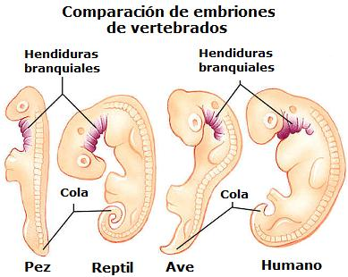“Ha quedado establecido ya que diversas partes de un mismo individuo que son exactamente iguales durante un periodo embrionario temprano, se vuelven muy diferentes y sirven para fines muy distintos en estado adulto. También se ha demostrando que, por lo general, los embriones de las especies más distintas pertenecientes a una misma clase son muy semejantes, pero cuando se desarrollan por completo se vuelven muy diferentes.”
El Origen de las Especies. Pág. 438. Capítulo 14
Es así como las piezas del rompecabezas, la anatomía, la embriología, la paleontología y la biogeografía se constituyeron en la mente del naturalista británico en pistas que apuntaban a un proceso natural: La evolución. Con estas pruebas, y las añadidas en el siglo XX con el desarrollo de la genética de poblaciones y la biología molecular, los biólogos pueden decir que la evolución es un hecho de la naturaleza. La forma como ocurre la evolución -la selección natural- fue el mecanismo que explica este hecho y fue algo que también lo explicó Darwin.
Una pista que ayudó a Darwin a llegar a plantear el origen común de las especies fueron los especímenes de aves de las islas Galápagos. De hecho, muchas personas piensan que tan pronto Darwin vio las diferentes especies de pinzones de las Galápagos, llegó a deducir la teoría de la descendencia con modificación. En realidad, el naturalista no vio nada de eso: tampoco llegó a clasificar los especímenes de pinzones por islas. Cosa que sí hizo en el caso de otro grupo de aves, los sinsontes (género Nesomimus, familia Mimidae). Según los historiadores, la diferenciación entre sinsontes de distintas islas fue mucho más importante para Darwin que la de los pinzones. No fue sino hasta marzo de 1837, en una visita que Darwin hizo en Londrés al ornitólogo John Gould, cuando el naturalista fue informado por Gould que los ejemplares de pinzones que había capturado en tres de las islas Galápagos representaban cuando menos tres especies diferentes, quizás trece. En realidad había trece especies de pinzones o ruiseñores (de los géneros Geospiza, Camarhymchus, y Certhidea) que no existían en ninguna otra parte del mundo y que tenían adaptaciones muy particulares en sus picos. Fue en la mesa de un laboratorio de ornitología, donde Darwin afianzó la idea que nuevas formas de organismos se pueden diversificar a partir de una inicial.
 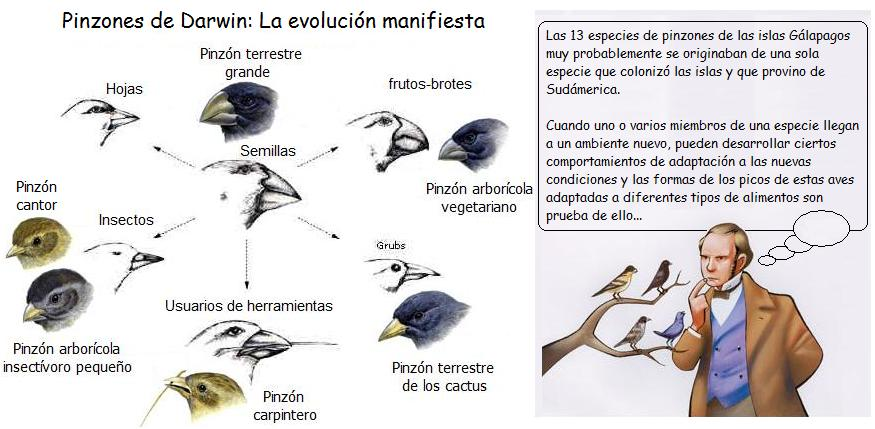
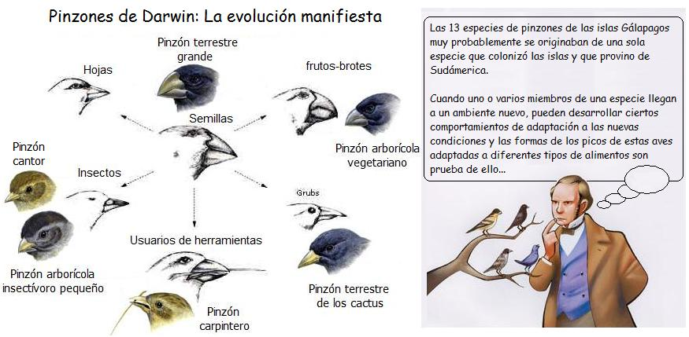
Después de este hecho que se le reveló ante sus ojos, Darwin intuyó que estos animales desarrollan distintas formas de picos en función de la isla en la cual se encuentran. La avifauna de las Galápagos jugó un papel crucial en la teoría de la evolución.
Darwin también notó la gran semejanza de la fauna y flora de las islas de archipiélago entre sí y de entre esta y la de Suramérica. Estos hechos biogeográficos le hicieron pensar en la realidad de la evolución. En las Galápagos no había mamíferos nativos, excepto una especie de ratón confinada en la isla más oriental de las Galápagos. Las 15 especies de peces que encontró eran todas desconocidas, lo mismo que casi todos los insectos y gran parte de los vegetales. Aunque las islas están cercanas entre sí, Darwin pensó que las fuertes corrientes oceánicas que las circundan dificultarían el intercambio de especies a través del agua con mucha frecuencia facilitando el aislamiento; y la falta de vientos huracanados haría improbable el traslado frecuente de aves, insectos o semillas de una isla a otra. Sin embargo, en un vasto período de tiempo, algunos pocos individuos podrían alcanzar una isla nueva (las Galápagos son islas de origen volcánico) y la selección natural actuaría generación tras generación formando las especies que luego él encontró en cada isla.
Un caso muy interesante lo constituyen las tortugas que le dan a las islas su nombre. Esta especie de tortuga (Geochelone nigra), muestra una gran diversidad de los caparazones en diferentes islas y en regiones de las islas de mayor tamaño. Las de caparazón en forma de domo, caracterizan a las Tortugas que viven en las islas con gran humedad y abundante vegetación, como por ejemplo en la Isla Santa Cruz y en algunos volcanes de las Isla Isabela; Las tortugas con caparazón en forma de silla de montar, con una elevación en la parte frontal (que facilitan la extensión del cuello), es característico de las tortugas que viven en las zonas áridas y con poca vegetación. Estas tortugas se hayan en las Islas de Española, Fernandina, Pinta y Pinzón, donde existen árboles de cactus y arbustos. Finalmente, existe una raza intermedia que se encuentra en la Isla Santa Fe, que combina las características de las dos tipos anteriores de caparazones.
La adaptación de las poblaciones de tortugas a sus respectivos ambientes fue otro indicio para que Darwin propusiera teoría de la descendencia con modificación.
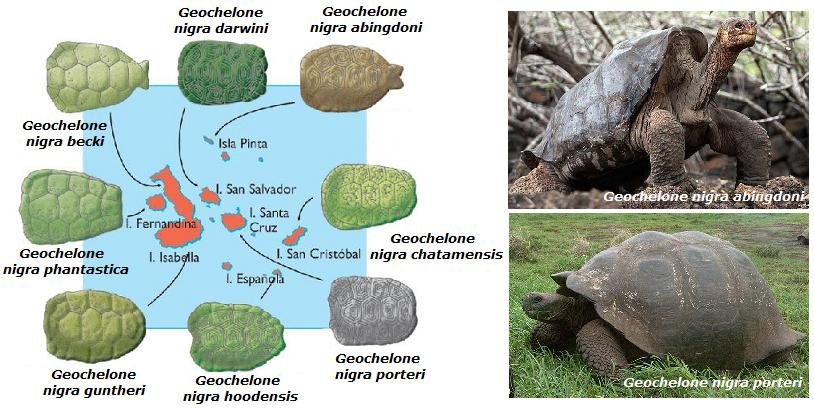
Con todas estas observaciones Darwin trabajó para dilucidar el origen de las especies. Después de su regreso a Inglaterra, el 2 de octubre de 1836, Darwin se dedicó a ordenar sus colecciones, y emprendió la tarea de preparar el material que había traído consigo, escribir sobre el material recolectado, frecuentar reuniones con científicos, entre ellos su amigo, el geólogo Charles Lyell. Entre julio de 1837 y octubre de 1839 Darwin elaboró completamente la teoría de la evolución en unas 900 páginas de notas privadas. Sin embargo, la publicación del Origen no se daría sino hasta 1859. Una razón de su demora era que Darwin no quería lastimar a su amada esposa, de profundas ideas religiosas, a causa de sus polémicas conclusiones.
¿Darwin dijo que somos fruto del azar?
Una de las respuestas más comunes de los opositores de la evolución -en su gran mayoría religiosos- es que aceptar las explicaciones evolucionistas implica creer que somos fruto del azar y que esto lo propuso Darwin. Esto es falso. Es diferente decir que somos fruto del azar a decir que somos fruto de un proceso natural. Es a esto último a lo que los religiosos le temen en verdad, y se niegan a aceptar.
La selección natural no es un fenómeno aleatorio, de hecho es contra aleatorio porque es una selección gradual y continua de lo útil, no una configuración al azar. Para que la selección natural opere se requiere que haya variabilidad genética, o en otras palabras que todos los individuos de una población no sean clones. La diversidad genética es posible por la mutación y la reproducción sexual. Sin embargo, las mutaciones que generan nuevas variables genéticas si ocurren al azar, pero estás son seleccionadas -valga la redundancia- por la selección natural.
La historia de la vida también ha tenido acontecimientos clave que han configurado el presente. De no haberse dado la extinción de finales de Jurásico, quizás los dinosaurios aún estarían en la Tierra y muy probablemente nosotros no. Pero esta situación de contingencia histórica también ocurre en la vida de todos los humanos, incluidos los creacionistas. De no haberse conocido sus padres usted no existiría. Los eventos históricos hacen parte de la historia de la vida. Es algo natural.
Pero, ¿acaso la evolución no es tan solo una teoría?
En términos científicos decimos que una teoría es un conjunto de observaciones, axiomas y postulados que explican bajo que condiciones se desarrollan ciertas predicciones. También podemos afirmar que los biólogos usan el término de teoría en el sentido de “un conjunto de explicaciones de un hecho natural con una gran base corroborativa” y no como sinónimo de hipótesis.
Podemos afirmar con seguridad que la evolución es una teoría pero también es un hecho de la naturaleza. Esto muchas veces esto no está claro en la mente del público en general. Por otra parte, desde los tiempos de Cuvier hasta el presente se sabe que las formas de vida han cambiado en la historia de la Tierra. De esto, el registro fósil presenta gran evidencia. Lo que lleva a concluir que la evolución es también un hecho de la naturaleza. Otros hechos que señalan que la evolución es un fenómeno real de la naturaleza son los trabajos en genética de poblaciones que muestran el cambio de la estructura genética de las poblaciones al pasar muchas generaciones. Esto último se considera evolución y por lo tanto ha sido observable. La idea de Darwin de que todas las comparten antepasados comunes se ha basado en la evidencia fósil y la evidencia viva (el ADN y las proteínas).
Para un mayor análisis invitamos al lector a leer el ensayo La evolución como hecho y teoría publicado en Sindioses.org
¿Las teorías de Darwin han sido comprobadas?
Una de las características que tiene la ciencia es la de ser falseable, o en otras palabras, debe tener la posibilidad de ponerse a prueba. Los creacionistas afirman que al no haber sido observado el proceso evolutivo no puede considerarse como un hecho científico, y que no puede ponerse a prueba. Sin embargo, este enfoque es erróneo, de ser así no podría saberse si hubo una erupción volcánica del Vesubio anterior a los registros históricos, o no serían posibles las ciencias forenses. Es el creacionismo el que carece de posibilidad de falsearse, y al no poderse poner a prueba no puede ser considerado como ciencia.
En el trabajo de Darwin hay dos teorías que son el origen común y la selección natural. Estas teorías, han recibido confirmación adicional con el trabajo de los paleotólogos, bioquímicos y genetistas que vivieron después del famoso naturalista británico.
En tiempos de Darwin el registro fósil estaba muy incompleto. Darwin estaría muy asombrado sobre los centenares de especies fósiles nuevas que se han hallado y que nos permiten ahora saber como evolucionaron los elefantes, caballos, ballenas, humanos y mamíferos en general; la evolución de las aves a partir de los dinosaurios también es algo que hoy se conoce con muchísimo mejor detalle.
De la misma manera como los rastros de sangre, los casquillos de bala, fibras y cientos de cosas más son pruebas para un investigador forense (los amantes de las series policiales tipo CSI lo saben bien) los fósiles, el polen asociado, los minerales radioactivos en las capas del mismo nivel, el paleomagnetismo de los minerales cercanos a los fósiles, su disposición en la columna geológica, son indicios para reconstruir el hecho de la evolución.
La evolución como hecho se caería abajo si se encontrase, por ejemplo, un fósil humano en estratos geológicos del Devónico, cuando hasta ahora estaban emergiendo los primeros vertebrados terrestres. La teoría también tendría dificultades si se encontrarán fósiles de tiranosaúridos o de elefantes en el período Silúrico, en el que la vida vertebrada se limitaba a los peces. La sucesión de fauna y flora en la columna geológica está ampliamente documentada, y en su conjunto es testimonio de la evolución.
La siguiente imagen muestra algunos grupos de organismos o especies en particular, con su respectivo rango en la columna geológica.

Miremos un ejemplo más puntual. La anatomía comparada de varias especies fósiles revelan que los tetrápodos, o vertebrados con cuatro extremidades (anfibios, reptiles, aves y mamíferos), descienden de peces con aletas carnosas (peces sarcopterigios) que empezaron a colonizar tierra firme dando origen a las primeras especies de anfibios alrededor de hace 380 millones de años. La teoría de la evolución estaría en serias dificultades si se encontrara un fósil de un humano o de un mamut en rocas de 400 millones de años o anteriores a la aparición de los primeros vertebrados terrestres. Pero los fósiles del Período Devónico que se siguen hallando comprueban la evolución. Una de las especies nuevas que se han encontrado en estado fósil es Tiktaalik, un curioso pez sarcopterigio, que muestra una extremidad anterior perfectamente transicional en su anatomía, entre una aleta pectoral de pez y una extremidad terrestre. Interesante también que la datación de este fósil llena un espacio temporal en el que está transición se esperaba.

En el caso de los orígenes humanos ocurre lo mismo. Si encontráramos un fósil humano en rocas anteriores a los 3 millones de años, la explicación actual debería modificarse. Todos los homínidos con cerebros mayores a 800 centímetros cúbicos han sido hallados en un rango de datación que inicia hace 1‘800.000 años, mostrando un aumento de la capacidad craneal. Los fósiles de homínidos anteriores al Homo habilis, muestran una capacidad cerebral menor. Los fósiles de Australopithecus, que vivieron entre hace 2 y 3 millones de años, muestran una capacidad cerebral de 485 c.c. Más atrás aún, en yacimientos del Oligoceno, no encontramos grandes simios ni humanos (homínidos), sino primates, como el Aegyptopithecus, que precedió a la divergencia de los grupos de los hominoidea (que incluye al hombre y a los grandes simios) y el de los cercopitecoideos (que incluye los monos del Viejo Mundo). El Aegyptopithecus tenía tan solo 30 centímetros cúbicos de capacidad cerebral.

Otro ejemplo lo proporcionan los proboscídeos, el orden al que pertenecen los elefantes. El registro fósil muestra como los elefantes actuales se originaron a partir de pequeños animales que merodeaban cerca del agua. Ningún fósil de elefante, mamut o mastodonte se ha encontrado en los estratos anteriores a la Era Cenozoica.
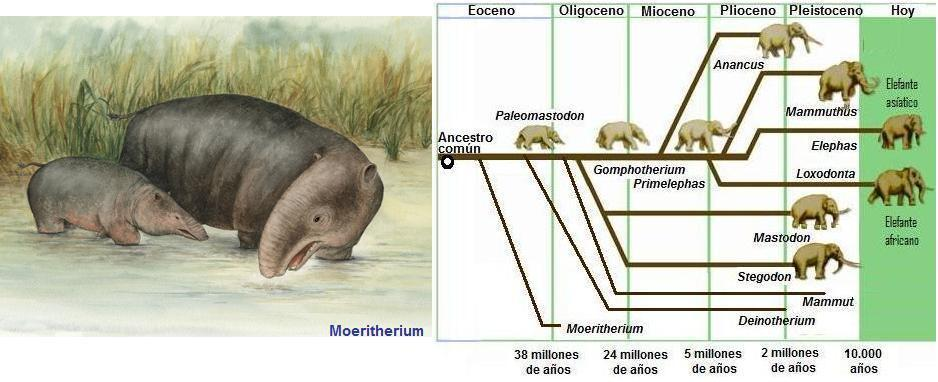
Hasta los tiempos de Darwin no había espacio para una explicación natural al origen de las especies. La hipótesis creacionista puede postular un diseño anatómico hecho en “la mesa de dibujo”, pero la selección natural no. Si las especies actuales provienen de otras en el pasado habría indicios, ya que la selección natural solo puede trabajar con las estructuras ya presentes. Estos indicios de hecho existen, y se denominan “vestigios” o “estructuras vestigiales.”
Un ejemplo de estructura vestigial se encuentra en el esqueleto de la ballena extinta Basilosaurus. Este cetáceo vivió hace 45 millones de años y es, hasta el momento, la primera ballena de gran tamaño conocida en el registro fósil. Los fósiles han revelado que las ballenas provienen de antepasados terrestres. En el Basilosaurus se pueden ver las patas posteriores como vestigios de un antepasado terrestre. Estas extremidades muestran la serie completa de huesos de una pierna terrestre: fémur, rótula, tibia, peroné, y los huesos del pie, incluidos los dedos. Estas extremidades están muy reducidas, y no se articulan al resto del esqueleto. Incluso en las ballenas actuales hay vestigios de la extremidad anterior, solo que más reducidos que en Basilosaurus. En las ballenas actuales, como en la ballena franca Eubalaena australis, también hay vestigios de la extremidad posterior, aunque más reducida que en el Basilosaurus. Esta estructura formada solo por una pequeña pelvis, y un reducido fémur está separada de la columna vertebral y permite actualmente en anclaje del pene en los órganos reproductores masculinos.
Muchos creacionistas señalan que no es una estructura vestigial porque ayudan a reforzar los órganos reproductores y no carecen en totalidad de funcionalidad. Nada más falso. Para que una estructura sea vestigial no se requiere que carezca totalmente de función, sino que sea un “vestigio” o un recuerdo o indicio de una estructura que en el pasado evolutivo estuvo plenamente desarrollada.
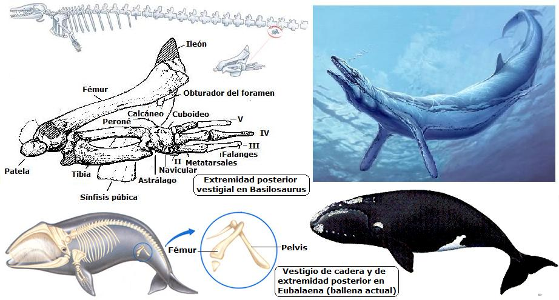Como puede notarse el registro fósil, la anatomía comparada y las estructura vestigiales, y la biogeografía son, examinadas en su conjunto, evidencias del hecho de la evolución.
Muchos años después de Darwin, la genética y la biología molecular muestran que la teoría del origen común tiene respaldo en el análisis genético.
Hoy en día, los análisis genéticos permiten conocer el parentesco entre personas. Por ejemplo, hay más genes en común entre el príncipe William y su hermano, el príncipe Henry, que entre el príncipe William y su primo Peter Phillips. El parecido genético entre los dos príncipes se debe a que tienen un ancestro en común más próximo, el príncipe Carlos, que entre William y Peter Phillips, que tienen como ancestro común a la reina Elizabeth. Al igual que las personas, que entre mayor parentesco hay más genes en común, las especies también comparten mayor cantidad de secuencias de ADN mientras más emparentadas estén. A mayor parentesco entre las especies hay un ancestro común más próximo en el tiempo geológico.

La teoría del origen común se caería si se encontrara que los genes de los leones son más parecidos a los de los canguros que a los de los tigres. Pero esto no ocurre así. Vez tras vez los análisis genéticos muestran el cercano parentesco de las especies con anatomía parecida por homología, y confirma las hipótesis sobre parentesco que revelan los fósiles.
Estas similitudes moleculares son la “evidencia viva” de la descendencia con modificación a partir de un ancestro común. Los biólogos moleculares han comparado la secuencia de proteínas que se encuentran en todos los organismos y que cumplen la misma función y han encontrado un gran apoyo al origen común, que ni Darwin pudo imaginar en su tiempo.

Un caso espectacular lo aporta las moléculas del citocromo C. Esta proteína se encarga del transporte de electrones en la respiración celular. El citocromo c es una molécula que ha evolucionado lentamente; esto es, la tasa de sustitución de aminoácidos por unidad de tiempo es baja, esto se debe a que cambios muy drásticos en la secuencia de aminoácidos harían la proteína no funcional.
El número de diferencias entre los aminoácidos del citocromo c permite formar el árbol filogenético que sintetiza la historia evolutiva de las especies que se les comparó esta proteína. Para sorpresa de los creacionistas, los datos muestran que la única diferencia entre los citocromos del humano y los del mono se debe a la sustitución de un aminoácido por otro en el linaje del hombre. Las diferencias son mayores entre los seres humanos y el caballo, pero son más parecidos si se comparan con el de la tortuga. Esto es totalmente congruente con la evidencia fósil. Los mamíferos: caballo, macaco y humano comparten un antepasado común más reciente, que el antepasado común entre los seres humanos y las tortugas. Realmente la concordancia entre el registro fósil -año tras año más completo- y las nuevas técnicas de biología molecular permiten afirmar más allá de toda duda razonable que la evolución biológica es un hecho de la naturaleza.

La otra teoría de Darwin, la selección natural -uno de los mecanismos de la evolución, ha sido confirmada como una fuerza natural que partiendo de la diversidad genética de las poblaciones logra adaptar las especies a su medio ambiente. La selección natural ha sido observada actuando en varias especies. Son casos famosos la creación de resistencia de diversos microorganismos a los antibióticos, la resistencia desarrollada por varios tipos de insectos a los insecticidas, incluido el DDT, el cambio de color de las polillas del abedul, entre muchos casos más.
La idea que la vida es antigua sobre la Tierra, también defendida por Darwin, ha sido ampliamente confirmada. Las técnicas de datación desarrolladas en el siglo XX han podido confirmarnos que las primeras formas de vida se remontan a 3.500 millones de años. No solo muestran que la vida ha tenido una cantidad de tiempo lo suficientemente enorme como para que se de el proceso evolutivo, sino que muestra que las primeras formas de vida eran bacterias, pequeños organismos formados por células procariotas, más sencillas que las eucariotas.
Dentro de las evidencias más antiguas de vida tenemos los estramotolitos. Estos son montículos formados por láminas de roca que contienen grandes cantidades de fósiles de bacterias y los restos fósiles más antiguos de seres vivos en la Tierra. Estas rocas se formaron capa a capa, mientras que en la parte superior del conglomerado se ubicaban las bacterias que vivían en ambientes marinos cálidos y poco profundos. Las dataciones sobre los estromatolitos más antiguos indican que estos aparecieron hace 3.500 millones de años.
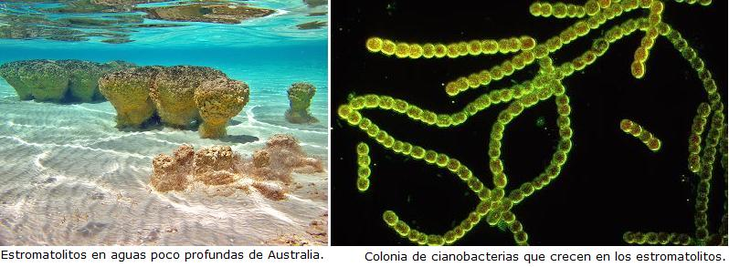¿Ha cambiado la comprensión de la evolución desde los días de Darwin?
Absolutamente. Para muchas personas la teoría de evolución son solo las explicaciones de Darwin, pero esto no es así. Seria como decir que la genética son solo las explicaciones dadas por Mendel.
En muchos aspectos la teoría de la evolución ha tenido modificaciones desde los días de Darwin. El Los principales cambios han sido la eliminación de la explicación lamarckista de la herencia de caracteres adquiridos, que Darwin no descartó, y la inclusión de la genética. La integración de la evolución por selección natural y la teoría genética formó la síntesis evolutiva moderna o la síntesis neodarwinista. Investigaciones posteriores han mostrado también que además de la selección natural hay otros mecanismos que juegan un papel en la evolución como la deriva genética, y otros que jugaron un papel importante en el pasado de la vida, como la endosimbiosis, responsable de la aparición de la célula eucariota.
Muchos biólogos, como Niles Eldredge y Stephen Jay Gould, han debatido el gradualismo durante toda la historia de la vida, postulando instantes en el que la especiación se da más rápidamente. Las causas de la especiación también han merecido atención por parte de los investigadores. La biología evolutiva, es al igual que la genética, una rama de la biología en activo desarrollo. Los aportes de Charles Darwin y Gregorio Mendel dieron las bases de estas ramas de la ciencia biológica, pero sus aportes no son el único elemento de la disciplina.
¿Ideó Darwin la teoría de la evolución para oponerse a la religión?
No. Antes del viaje del Beagle Darwin nunca pensó que su carrera científica daría luz al enfado de los religiosos. Durante su viaje en el Beagle muchas veces citó la Biblia como norma moral, y era un convencido de la creación divina. En las Galápagos, a diferencia de lo que muchos creen, no cambió su punto de vista. Fue solo cuando ya de nuevo en Inglaterra que empezó a unir las piezas de la teoría de la evolución al analizar patrones de anatomía, el registro fósil, la embriología comparada, y la crianza bajo domesticación que empezó a dudar sobre un dios creador. Darwin gradualmente notó que sus teorías, la del origen común y la de la selección natural, le valdrían la animadversión de muchos religiosos, y tuvo temor a presentarlas.
Darwin estuvo influenciado por las ideas del teólogo William Paley, quien utilizó el argumento del diseño para sustentar la existencia de Dios. La obra de Paley “Natural Theology” proponía que la naturaleza contiene “manifestaciones de un diseño, que debe proceder de un creador, que ese creador ha de ser una persona y que esa persona es Dios”. El problema para Darwin sobrevino después cuando notó que el aparente diseño de la naturaleza no existía, al analizar las estructuras vestigiales y el registro fósil. La selección natural era el diseñador ciego que moldeaba a las especies durante milenios.
La Evolución por selección natural hacía innecesaria la idea de que un dios había creado cada una de las especies por separado. La creación especial ya no tenía lugar.
“No hemos obtenido ninguna explicación científica sobre la visión ordinaria de que cada una de las especies han sido creadas independientemente.”, Afirmó Darwin.
El sufrimiento en la naturaleza fue para el genio de las especies un problema con el cual lidiar. La selección natural muestra que el mundo es un lugar de presas y depredadores, de parásitos y huéspedes, de matar o morir. La idea del sufrimiento en el mundo natural entraba en contradicción con la idea del dios diseñador, que además era “infinitamente amoroso”
“No puedo llegar a persuadirme de que un Dios benéfico hubiera creado adrede a los icneumónidos (avispas pseudoparásitas) con la intención expresa de que comieran dentro de las orugas vivas, o de que un gato jugara con los ratones.”
Hacía su tercera década Darwin no aceptaba el literalismo bíblico. Esto no lo hacía un ateo, aunque para muchos cristianos esto ya es ir demasiado lejos.
“Pero para esta época, 1836 a 1839, yo había comenzado a ver, gradualmente, que el Viejo Testamento, desde su manifiesta falsa historia del mundo, con su Torre de Babel, el arco iris de señal, etc., etc., y desde atribuirle a Dios los sentimientos de un tirano vengativo, no era más de confiar que los libros sagrados de los hindúes o las creencias de cualquier bárbaro.”
No obstante, Darwin siguió siendo teísta pasados los cuarenta, aunque ya con una fe poco intensa. Pero, cuando su hija Annie murió en 1851 a la edad de 10 años, el sufrimiento pasó de ser un problema teorético a uno personal y real. Este hecho destrozó la vida del naturalista y acabó lo que le quedaba de su fe cristiana.
En su autobiografía el naturalista explica las razones que le llevaron a abandonar la fe, y fueron argumentos que también han llevado a muchos a abandonar la religión: las contradicciones entre distintas religiones reveladas, la negación de un Dios cruel y castigador o el rechazo a una supuesta condenación eterna para los paganos.
“Es para mi difícil ver cómo alguien puede desear que el cristianismo sea verdad; porque si es así, el lenguaje común del texto parece mostrar que el hombre que no cree, y esto incluiría a mi padre, hermanos y casi todos mis amigos, serán condenados permanentemente. Y ésa es una doctrina detestable.”
Darwin nunca criticó públicamente la religión. Quizás por evitar lastimar a su esposa Emma, quien era profundamente religiosa. En su autobiografía se definió más como agnóstico que como ateo:
“No puedo pretender aclarar en lo más mínimo estos abstrusos problemas. El misterio del principio de todas las cosas es insoluble para nosotros, y yo, al menos, debo contentarme con seguir siendo un agnóstico”
¿Es cierto que Darwin incentivó el nazismo y el capitalismo salvaje?
No. La aplicación tergiversada de la evolución, que se conoce como darwinismo social, a la sociedad nunca fue una intención del naturalista inglés. El darwinismo social es una pseudociencia que aplicó Herbert Spencer (1820-1903) a las relaciones humanas, creando una base teórica para el racismo, el machismo, la homofobia y la discriminación de los minusválidos.
De hecho la frase “la supervivencia del más fuerte”, que se le adjudica a Darwin, fue en realidad acuñada por Herbert Spencer. La superviviencia en la naturaleza implica lucha, como es el caso de los miembros de una manada de lobos, pero también implica cooperación, las relaciones simbióticas, y el cuidado de las crías. Lo que indica que la lucha por la supervivencia no es solo lucha violenta. En todo caso la naturaleza no puede darnos lecciones de moralidad, ya que esta solo existe en el ámbito humano, ya que la ética es razonable, y esta cualidad es solo de nuestra especie.
Darwin nunca apoyó la idea del desamparo de los pobres en la lucha por la riqueza, ni mucho menos la aniquilación de etnias, o de los minusválidos como lo hizo el nazismo. Él defendía la idea de una sociedad justa, y recalcó que la posibilidad de hacer el bien era la mejor característica de la humanidad. En sus palabras:
Si la miseria del pobre es causada no por las leyes de la naturaleza, sino por las instituciones, grande es nuestro pecado.
El amor por todas las criaturas vivientes es el más noble atributo del hombre.
Para mayor información sobre este tema lo invitamos a leer nuestro artículo “Darwin y las ideas torcidas sobre su legado”
¿Es cierto que Darwin se retractó antes de morir de la evolución y se convirtió al cristianismo en su lecho de muerte?
No. Una historia que ha circulado principalmente entre los creacionistas es que Darwin se retractó de la evolución y se convirtió en cristiano cuando estaba a punto de morir.
La historia cuenta que cierta amiga de la familia Darwin, Lady Hope, era una devota. En un otoño Lady Hope fue a la casa del naturalista, justo unos pocos días antes de la muerte de Darwin, y lo encontró leyendo la epístola a los Hebreos del Nuevo Testamento. Después de algunas preguntas, Darwin comenzó a hablar con ella acerca de que él era muy joven cuando formuló sus ideas de la evolución y que lamentaba que tanta gente había hecho de aquellas ideas su religión. Narra la historia que Darwin luego insistió que Lady Hope regresara a su casa de verano esa tarde, a las 3:00 p.m., para leer la Biblia a sus sirvientes y a los aldeanos cercanos. Cuando ella preguntó qué quería exactamente Darwin que ella leyera, supuestamente él dijo enfáticamente “¡Lee acerca de Cristo y Su salvación!”. Lady Hope, así dice la historia, rápidamente esparció la buena noticia de que Darwin, ahora en su lecho de muerte, se había convertido en un creyente en Dios y un cristiano.
La historia es claramente falsa. Darwin murió en abril de 1882, en primavera, no en otoño, cuando recibió la supuesta visita. Darwin no se encontraba postrado en cama desde el otoño de 1881. Si bien es cierto que hubo en Inglaterra una contemporánea llamada Lady Hope, no hay registro que tal señora visitara a Darwin. También la idea de que Darwin se retractara de la evolución con el argumento de que era “muy joven cuando la enunció” es falsa. Charles publicó “El Origen” cuando tenía 50 años, e hizo seis revisiones desde 1859 a 1872.
Usualmente esta historia es esgrimida por los creacionistas en el intento de contrarrestar la Teoría de la evolución. No obstante, debe recordarse que en ciencias, a diferencia de las religiones, la aceptación reside en las pruebas aportadas y no en la autoridad de un personaje.
¿Qué importancia tiene la teoría de la evolución en el mundo moderno?
La teoría de la evolución en la actualidad nos permite conocer muchos aspectos del mundo natural. Gracias a la teoría de la selección natural sabemos que la batalla contra virus y bacterias no se gana con un simple antibiótico, y que será una larga “carrera armamentista”. Se sabe que por selección natural aparecen nuevas cepas de microorganismos, y este conocimiento es vital para enfrentar las enfermedades infectocontagiosas.
Los conocimientos de la genética de poblaciones, parte de la síntesis neodarwiniana, tienen aplicaciones en la conservación de las especies silvestres, el mantenimiento de la diversidad genética de las plantas y animales domésticos, para garantizar la subsistencia humana. Pero más allá de las aplicaciones prácticas la Teoría de la evolución por selección natural nos permite respondernos sin recurrir a mitos, la antiquísima pregunta que todos los pueblos se han hecho: ¿Por qué estamos aquí?
“Probablemente todos los seres orgánicos que hayan vivido nunca sobre esta tierra han descendido de alguna única forma primordial, a la que se infundió vida por primera vez. Esta opinión sobre el origen de la vida tiene su grandeza, porque mientras este planeta ha ido dando vueltas de acuerdo con la ley fija de la gravedad, a partir de un inicio tan sencillo han evolucionado y siguen evolucionando formas sin fin, las más bellas y las más maravillosas.”
El origen de las especies, Página 480. Capitulo 15
Volver a la sección Ciencias de los orígenes
Comentarios
Comments powered by Disqus